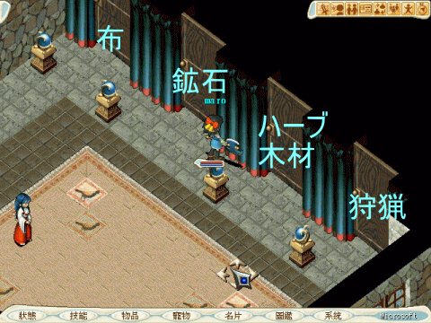

台湾ＸＧだけですが、任意鍵というものがあります。
（入手方法はパッケージや季節限定イベントっぽいです）
南側の噴水のちょい上（162.146）に、新しいゲートがあって、そこに入ったら
別の街？（亞諾曼城）抜けるのですが、
その冒険者の宿（151.151）の中のＮＰＣ（35.32）に話しかけると「要使用任意・・・」といわれますので
「是」と答えて中に入ります。

それぞれの扉に合言葉を言うと、その採取物のとれる場所にワープできます。
対応しているものは、Ｒ６〜８の採取物のみらしいです。
ちなみに、ゲート使わなくても近くに採取場所がある場合、任意鍵で飛ぶことができます。
布
| Rank | 台湾名 | 日本名 | 飛ばされる場所。その他備考。 |
| ６ | 蠶絲 | 絹 | ソルキア（700.150）ガルーナ付近です。 |
| ７ | 莎蓮娜紗 | セレーネ糸 | ジェノーバ（360.460） |
| ８ | 傑諾瓦紗 | ジェノーバスリード | ジェノーバ（200.500）。近くにじゃがいも（182.487）、フェンネル（178.510）があります。 |
| ８ | 阿巴尼斯棉 | アルパネッサ？ | 大学内（25.51） |
鉱石（注：藍龍之鱗は、鱗の字が特殊なのでコピペしても使えません・・・）
| Rank | 台湾名 | 日本名 | 飛ばされる場所。 |
| ６ | 白金 | 白金 | カニクマ洞窟１Ｆ（9.69） |
| ６ | 鋼騎之礦 | マイティナイト | 海賊の島（鉱石） |
| ７ | 幻之鋼 | ミスリル鋼 | ジェノーバ海底洞窟地下２Ｆ（44.48） |
| ８ | 幻之銀 | ミスリル銀 | ジェノーバ海底洞窟地下２Ｆ（19.8） |
| ８ | 達馬斯礦 | ダマスクス鉱石 | イーリス鉱山入り口大坑道（40.120） |
| ８ | 永久冰石 | 永久氷石 | 青龍の洞窟地下２Ｆ（22.24） |
| ８ | 藍龍之鱗 | ブルードラゴンの鱗 | 青龍の巣（63.36） |
ハーブ/木材
| Rank | 台湾名 | 日本名 | 飛ばされる場所 |
| ６ | 赤松 | アカマツ | フレイア水洞窟付近（400.550）近くに布Lv4の綿花がとれるところ（359.520）があります。 |
| ６ | 番紅花 | サフラン | フレイアお花畑（503.132）近場でR1〜R5ハーブとれます。 |
| ６ | 鋼騎之礦 | マイティナイト | 海賊の島（伐採）（157.58）R1〜3の伐採物全部とれます。 |
| ７ | 朴 | ホオノキ | セレーネ（183.459）ジェノーバでてすぐ下のあたりです。 |
| ７ | 百里香 | タイム | セレーネ（（175.497） |
| ８ | 杉 | スギ | セレーネ（161.354）赤犬のすぐ近くです。 |
| ８ | 單木 | シングロール | ミネガル島（240.400）勾玉洞窟に行く途中ぐらいの場所です。 |
| ８ | 瞿麥 | ナデシコ | セレーネ（262.574）ジェノーバ上出口からでて右下にいったところ。 |
| ８ | 香草 | クイニ | クルクス島（509.507）コーラル出てだいぶ右上のほう。敵は弱いから船で行くよりいいかも？ |
| ８ | 魔法紅蘿蔔 | マジカルキャロット | 大学（32.167） |
狩猟
| Rank | 台湾名 | 日本名 | 飛ばされる場所 |
| ６ | 米 | 米 | ソルキア（626.304）ハーベルの地のところの近く。フォルケン行くときも便利。 |
| ６ | 砂糖 | 砂糖 | 大学（85.46） |
| ６ | 鋼騎之礦 | マイティナイト | 海賊の島（狩猟）（157.58）牛乳以外のR1〜3の狩猟物全部とれます。 |
| ７ | 高級？油 | 高級バター | セレーネ（154.349）赤犬のすぐ近くです。近場に杉がとれるところ（161.354）があります。 |
| ７ | 辣椒 | 唐辛子 | セレーネ（309.447） |
| ７ | ？哩塊 | カレールー | セレーネ（265.430）ジェノーバの上の出口出てすぐ。 |
| ８ | ？蟹 | 蟹 | セレーネ（318.503） |
| ８ | 霜降牛肉 | 霜降牛肉 | セレーネ（5544.271）ティナでてすぐ左下のあたりです。 |
| ８ | 阿巴尼斯哈密瓜 | アルパネスメロン | 大学（90.77） |
| ８ | ？地毒蛇 | スワンプヴァイパー | 大学の地底湖地下２Ｆ（37.49） |